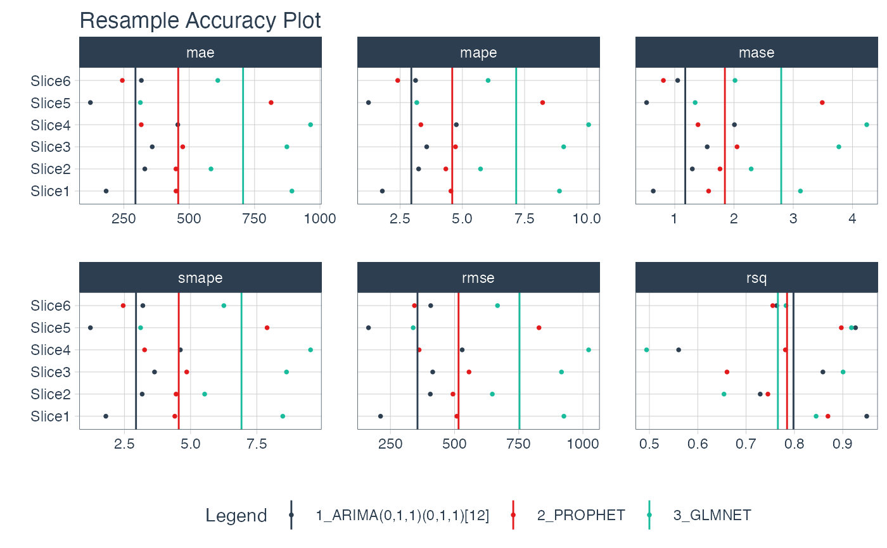

R/plot_modeltime_resamples.R
plot_modeltime_resamples.RdA convenient plotting function for visualizing resampling accuracy by resample set for each model in a Modeltime Table.
plot_modeltime_resamples( .data, .metric_set = default_forecast_accuracy_metric_set(), .summary_fn = mean, ..., .facet_ncol = NULL, .facet_scales = "free_x", .point_show = TRUE, .point_size = 1, .point_shape = 16, .point_alpha = 1, .summary_line_show = TRUE, .summary_line_size = 0.5, .summary_line_type = 1, .summary_line_alpha = 1, .x_intercept = NULL, .x_intercept_color = "red", .x_intercept_size = 0.5, .legend_show = TRUE, .legend_max_width = 40, .title = "Resample Accuracy Plot", .x_lab = "", .y_lab = "", .color_lab = "Legend", .interactive = TRUE )
| .data | A modeltime table that includes a column |
|---|---|
| .metric_set | A |
| .summary_fn | A single summary function that is applied to aggregate the
metrics across resample sets. Default: |
| ... | Additional arguments passed to the |
| .facet_ncol | Default: |
| .facet_scales | Default: |
| .point_show | Whether or not to show the individual points for each combination
of models and metrics. Default: |
| .point_size | Controls the point size. Default: 1. |
| .point_shape | Controls the point shape. Default: 16. |
| .point_alpha | Controls the opacity of the points. Default: 1 (full opacity). |
| .summary_line_show | Whether or not to show the summary lines. Default: |
| .summary_line_size | Controls the summary line size. Default: 0.5. |
| .summary_line_type | Controls the summary line type. Default: 1. |
| .summary_line_alpha | Controls the summary line opacity. Default: 1 (full opacity). |
| .x_intercept | Numeric. Adds an x-intercept at a location (e.g. 0). Default: NULL. |
| .x_intercept_color | Controls the x-intercept color. Default: "red". |
| .x_intercept_size | Controls the x-intercept size. Default: 0.5. |
| .legend_show | Logical. Whether or not to show the legend. Can save space with long model descriptions. |
| .legend_max_width | Numeric. The width of truncation to apply to the legend text. |
| .title | Title for the plot |
| .x_lab | X-axis label for the plot |
| .y_lab | Y-axis label for the plot |
| .color_lab | Legend label if a |
| .interactive | Returns either a static ( |
Default Accuracy Metrics
The following accuracy metrics are included by default via modeltime::default_forecast_accuracy_metric_set():
MAE - Mean absolute error, yardstick::mae()
MAPE - Mean absolute percentage error, yardstick::mape()
MASE - Mean absolute scaled error, yardstick::mase()
SMAPE - Symmetric mean absolute percentage error, yardstick::smape()
RMSE - Root mean squared error, yardstick::rmse()
RSQ - R-squared, yardstick::rsq()
Summary Function
Users can supply a single summary function (e.g. mean) to summarize the
resample metrics by each model.
m750_training_resamples_fitted %>% plot_modeltime_resamples( .interactive = FALSE )